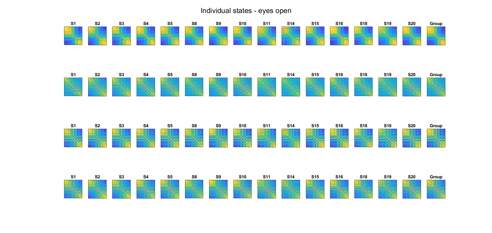
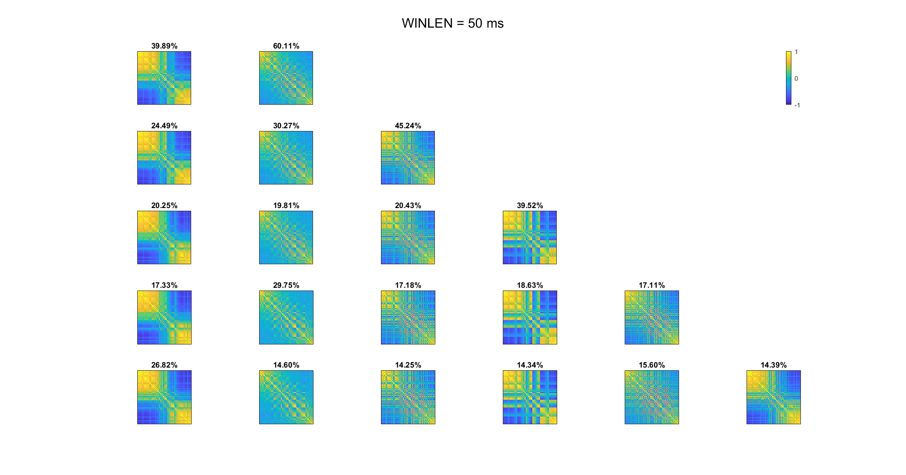
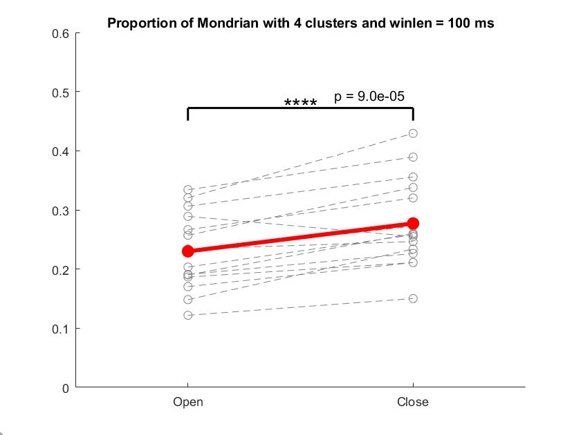
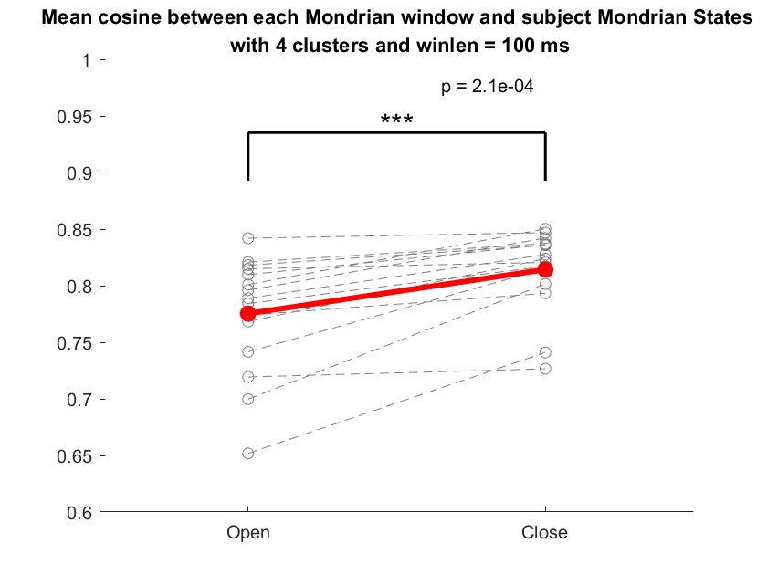
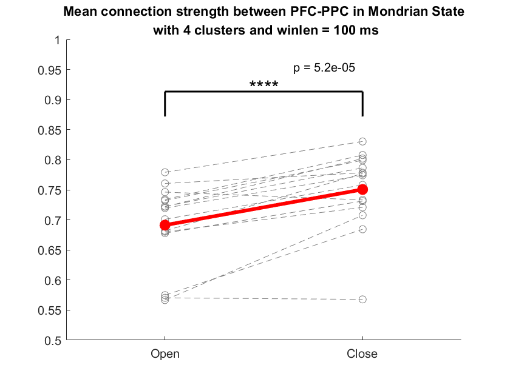

Functional Connectivity Microstates as Biomarkers of the Mind
After the summer internship, I continued to work on topic of EEG functional-connectivity-based microstates. Now we have discovered some intriguing results. First, we illustrated the structure of FC-states that:
FC-states correlated with the voltage-based microstates both in the space and time domains.
FC-states had a fractal structure.
Second, we found one specific FC-state that reflected the activity of the Default Mode Network (DMN) in a way that:
Its proportion and average length increased as the engagement of DMN increased.
Its connectivity profile became more stable as the engagement of DMN increased.
It encoded the connection strength between two important cortical areas in DMN (Prefrontal Cortex (PFC) and Posterior Parietal Cortex (PPC)), which increased as the engagement of DMN increased.
connectivity-based equivalents of the traditional microstates
EEG microstates were traditionally defined as a "representative" voltage distribution pattern, and they were computed by k-means clustering of the EEG landscape at the peak of the Global Field Power (GFP). However, this paradigm failed to take into consideration the functional connectivity between different brain areas. In a pilot study, we adopted another methodology. Instead of static voltage distribution, we clustered the functional connectivity pattern within a certain time window.
Interestingly, we found the connectivity-based microstates analogous to the traditional ones, both in the topology and the time course (here at single-subject level):
Figure 1. The FC & GFP microstates
First row: functional connectivity matrices for the "Story" condition; Second - fourth rows: functional connectivity topologies for "Story", "Music" and "Rest" respectively. Only the strongest positive connections were shown; Last row: GFP patterns from (Michel & Koenig, 2018). Note the apparent similarity between FC and GFP microstates.
Figure 2. The temporal overlapping of FC & GFP microstates
This is an intuitive illustration of the similarity in temporal dynamics between two paradigms. We labeled every timepoint by FC & GFP microstates seperately and count the occurance of every (FC, GFP) pairs, then normalized it by the expected number of occurance assuming that the two methods were independent. Therefore, a value higher than 1 indicates the potential connection between these two states. Here we highlighted the largest value in each row, and it's clear that the relationship mimics the result in Figure 1.
Fractal Structure of FC-Microstates
We analyzed the data from a resting EEG dataset (4 minute eyes open and 4 minute eyes closed for each subject) with our method. "Group states" were defined by k-means clustering of the connectivity profiles from all subjects and conditions, and "subject states" were defined by averaging all connectivity profiles within each subject, each condition and each group states. We found that the subject states were highly consistent with the group states, which demonstrated the reliability of our method.

Figure 3. The group and individual microstates
This figure shows the connectivity profile of each subject's microstates with window length = 100ms and k = 4 in eyes open condition (very similar for eyes closed condition, not shown). It can be seen that the subject-specific states were highly consistent with the group states, and the four states (from up to down) corresponded to the "Mondrian", "Peanut", "Other" and "Chessboard" in our pilot study (note that the order of channels were different).
After that, we investigated the structure of the group states. It had been demonstrated that the fMRI FC-states had a hierarchical structure (Reinen et. al., 2018). Therefore, we also hypothesized that the solutions to k clusters will be retained in solutions to k+1 clusters, as it is in Fig. 4 and Fig. 5.
Figure 4. The hierarchical structure of FC microstates
This figure shows the connectivity profile of the group microstates with window length = 100ms and k from 2 to 6. The pair relationship was defined by maximizing the sum of cosine values between two matrices in the same state with k and k-1 clusters.
Figure 5. The topology of FC microstates
This figure shows the connectivity topology of the group microstates with window length = 100ms and k from 2 to 6 as in Fig. 4. Only the 5% most strongest connection (2.5% each tail) were drawn.
We also investigated the temporal structure of these states by a wide range of window length, from 50ms to 1000ms. Interestingly, we found that the connectivity profiles were roughly the same across different time scale, in accordance with a fractal structure.
50ms
1000ms

Figure 6. The self-similarity of FC microstates
This figure shows the connectivity profile of the group microstates with window length = 50ms and 1000ms and k from 2 to 6 as in Fig. 5.
The "Mondrian" state and Default Mode Network (DMN)
The activity of DMN has been associated with GFP microstate C (Brechet et al., 2019), which corresponded to our FC microstate "Mondrian" (by the way, we gave it this nickname since its connectivity matrix resembled Mondrian's paintings), which was characterized by a strong PFC-PPC connection. Therefore, we examined the dynamics of this microstate as well as the connection strength under different experimental conditions. In order to be consistent with the traditional microstates, k and window length were defined as 100ms and 4 a priori, and all p-values were calculated by paired t-test with n=15.
First, the Mondrian state became more significant in the eyes closed condition:

Figure 7. The proportion of Mondrian state
Y index of each grey circle indicates the proportion of Mondrian states in one subject's data from one condition, and the red circle indicates the mean value across subjects. A dash line connects the two results from the same subject. It's clear that the Mondrian state took up a larger proportion when eyes were closed.
Second, the Mondrian state became more stable in the eyes close condition. In the time domain, each Mondrian state became longer (i.e. higher within-Mondrian transition probability), as in Fig. 8; in the space domain, the connectivity profile became more homogeneous, as in Fig. 9:
Figure 8. Mean transition probability to another Mondrian window after a Mondrian window
Similar to Fig. 7, the y-index indicates Pr{ S(t + 1) = "Mondrian"|S(t) = "Mondrian" }, which was higher when eyes were closed.

Figure 9. Similarity between each Mondrian window and subject Mondrian state
Here similarity was defined as the cosine value between two connectivity profiles. It was shown that the connectivity profile became more stable in the eyes closed condition.
In order to find out the essential connections that differs between conditions, we examined the strongest negative connections in the Mondrian state so as to avoid the volume conduction problem. Fig. 5 revealed that these connections were mainly frontoparietal, connecting two important area in DMN. Therefore, we averaged the connection strength between these two clusters of channels and the results were in accordance with the finding above:

Figure 10. The connection strength between frontal and parietal clusters
Similar to the previous result, the frontoparietal connection was stronger when eyes were closed. Here PFC = {'Fp1', 'Fpz', 'Fp2', 'AF3', 'AFz', 'AF4', 'F1', 'Fz', 'F2'};
PPC = {'O1', 'Oz', 'O2', 'PO3', 'POz', 'PO4', 'P1', 'Pz', 'P2'};
Discussion
In this research, we investigated the properties of EEG functional-connectivity-based microstates. We demonstrated the analogous relationship between our result and the traditional voltage-based microstates both in the topology and temporal dynamics. We also found that the FC microstates have a hierarchical, self-similar organization.
On top of that, we investigated the relationship between one specific FC state and the activity of the DMN. Using a variety of measurements, we proved that the Mondrian state reflected the dynamics of the DMN, especially the change in frontoparietal connectivity.
Our research provides a new technique to represent the short-term stability and long-term variability in human brain activity. It can act as a high-dimensional complement of the voltage-based microstates in neuroscience research. Besides, we discovered a new biomarker of the activity of DMN, which shed lights on the importance of the frontoparietal connections. However, there are some problems that remain to be solved:
First, the Pearson correlation we used failed to exclude the effect of volume conduction. On one hand, we argue that the difference in Mondrian state properties we found cannot be purely explained by the effect of volume conduction, since it should be consistent across conditions. On the other hand, the connectivity profile may indeed by disrupted by volume conduction, so the PFC-PPC connection that we focused on may reflect the summation of many distributed connections. A further investigation using other connectivity indices may help with this problem.
Second, it is unclear whether the difference in microstate properties really reflects the activity of DMN, or other neural activity that differs between eyes open and closed condition, e.g. alpha oscillation. In order to solve this problem, we are now designing new experiments to incorporate more conditions, especially the self-oriented conditions that reflects the activity of DMN. We also want to further investigate the relationship between microstates and alpha oscillation by Phase-Lock-Value(PLV)-based microstates. Please contact me if you want to know the latest result: (crq)(AT)(pku)(DOT)(edu)(DOT)(com).
Appendix
Data availability
The EEG data was published here. All the codes will be available here after publish (not yet).
Preprocessing
We generally followed the guidance of the ADJUST plugin. The first part was done by Preprocessing.m on each session:
Read .bdf data into EEGLAB
Imported channel location automatically
Re-referenced to average mastoids (required for ActiveTwo system)
60Hz notch filtered
0.2Hz high-pass filtered (-6db frequency 0.1Hz)
Excluded the inter-block period
Rejected channel with extremely big or small range (crazy or dead ones), currently set as 10-400 uV in the whole session.
Automatic channel rejection (based on Kurtosis)
Skipped this subject if more than 1/3 channels were rejected
ICA
Used ADJUST to mark the components related to blink and horizontal eye movement
Saved the properties of the marked components
Deleted the useless files generated by binica.m and ADJUST
Using the current parameters, 6/22 subjects were rejected. Besides, S6 who only had 4 blocks was also rejected. After that, we visually inspected the marked components and retained the ones to reject. Then we ran SelectDat.m:
Subtracted the marked components (if any)
Interpolated the rejected channels
Excluded the channels not in the standard 64-channel system
Computed average reference again
Down sampled to 128Hz
Rearranged the channels from front to back
Extracted and saved the data (in blocks of 1 min) to MATLAB file
The data was separately saved for each participant in a MATLAB file, e.g. ../Analysis/S5/data.mat. The file contained a 4 * 2 cell variable named allEEG, and each element was a nChn * nTime single matrix for each 1 min block, the first column from open condition and second column from closed condition.
Analysis
First, we clustered the data by sliding-window-based Pearson correlation matrix in Clustering.m by k-means algorithm implemented in MATLAB, with number of clusters ranging from 2 to 6 and window length = {50ms, 100ms, 200ms, 400ms, 1000ms}.
Then, we reordered the clusters and depicted their hierarchical structure in changeLabel.m and drawCenter.m. We hypothesized that k+1 clusters = k clusters + one extra cluster, so we defined the pair relationship by maximizing the sum of cosine value between two connectivity matrices in each pair.
After that, we calculated the subject-and-condition-specific states by averaging all connectivity profiles within each subject, each condition and each group states. Then we relabeled each time window by the most similar (highest cosine) subject-and-condition-specific states for each subject, each condition and each group states.
At last, we defined the ROIs (window length, k, PFC and PPC channels, state) based on the pilot study and the result in the previous steps, calculated different statistics and plotted the results.
Acknowledgement
I thank Prof. Bo Hong for his patient and insightful guidance on our research, and Miss Diya Yi for collaboration and inspirations. I also thank the senior members in Prof. Hong's lab, including Ruxue Wang, Chen Hong, Wenzheng Li and many others, for their assistance and suggestions during the research.